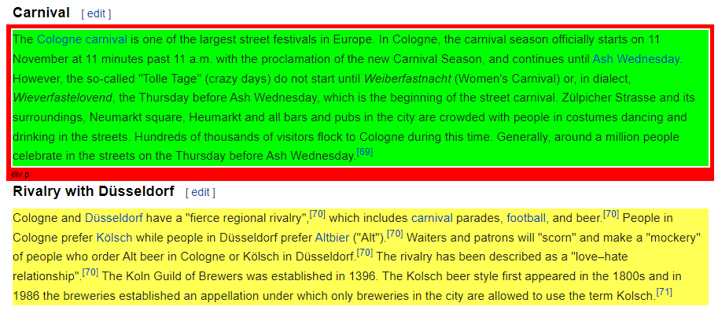
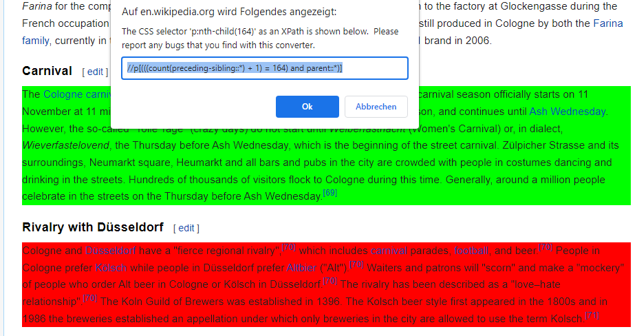
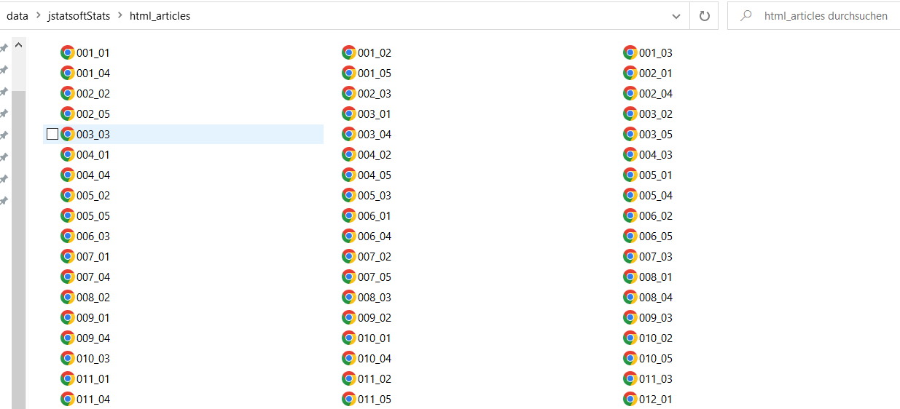

Web Scraping
Collecting Data from the Web using R
After talking quite a bit about data formats and data processing in the past weeks, today’s session is dedicated to data collection - from the web!
What we will cover:
- basic web technologies (html, xpath)
- scraping static webpages
- scraping multiple static webpages
- data cleaning using regular expressions
- building up and maintaining you own original sets of web-based data
What we will not cover (today):
- scraping dynamic webpages
- APIs
Why webscrape with R? 🌎
Webscraping broadly includes a) getting (unstructured) data from the web and b) bringing it into shape (e.g. cleaning it, getting it into tabular format).
Why webscrape? While some influential people consider “Data Scientist” 👩💻 as the sexiest job of the 21st century (congratulations!), one of the sexiest just emerging academic disciplines (my influential view) - Computational Social Science (CSS). Why so?
- data abundance online
- social interaction online
- services track social behavior
BUT online data are usually meant for display, not (clean) download!
But getting access to online data would also be incredibly interesting when you think of very pragmatic things like financial resources, time resources, reproducibility and updateability…
Luckily, with R we can automate the whole pipeline of
downloading, parsing and post-processing to make our projects easily
reproducible.
In general, remember, the basic workflow for scraping static webpages is the following.

Scraping static websites with rvest 🚜
Who doesn’t love Wikipedia? Let’s use this as our first, straight forward test case.
Step 1. Load the packages rvest and
stringr.
library(rvest)
library(stringr)
library(tidyverse)Step 2. Parse the page source.
parsed_url <- read_html("https://en.wikipedia.org/wiki/Cologne")Step 3. Extract information.
parsed_url %>%
html_element(xpath = '//p[(((count(preceding-sibling::*) + 1) = 164) and parent::*)]') %>%
html_text()## [1] "The Cologne carnival is one of the largest street festivals in Europe. In Cologne, the carnival season officially starts on 11 November at 11 minutes past 11 a.m. with the proclamation of the new Carnival Season, and continues until Ash Wednesday. However, the so-called \"Tolle Tage\" (crazy days) do not start until Weiberfastnacht (Women's Carnival) or, in dialect, Wieverfastelovend, the Thursday before Ash Wednesday, which is the beginning of the street carnival. Zülpicher Strasse and its surroundings, Neumarkt square, Heumarkt and all bars and pubs in the city are crowded with people in costumes dancing and drinking in the streets. Hundreds of thousands of visitors flock to Cologne during this time. Generally, around a million people celebrate in the streets on the Thursday before Ash Wednesday.[69]"How can do I know THIS
xpath = '//p[(((count(preceding-sibling::*) + 1) = 164) and parent::*)]'
?
There are two options:
Option 1. On your page of interest, go to a table that you’d like to scrape. Our favorite bowser for webscraping is Google Chrome but others work as well. On Chrome, you go in View > Developer > inspect elements. If you hover over the html code on the right, you should see boxes of different colors framing different elements of the page. Once the part of the page you would like to scrape is selected, right click on the html code and Copy > Copy Xpath. That’s it.

Option 2. You download the Chrome
Extension SelectorGadget and activate it while browsing
the page you’d like to scrape from. You will see a selection box moving
with your cursor. You select an element by clickin on it. It turns green
- and so does all other content that would be selected with the current
XPath.

You can now de-select everything that is irrelevant to you by clicking it again (it then turns red). Final step, then just click the XPath button at the bottom of the browser window. Make sure to use single quotation marks with this XPath!

Let’s repeat step 2 and 3 with a more data-sciency example. 🎓
Step 2. Parse the page source.
nypl_url <- "https://www.nypl.org/books-more/recommendations/best-books/adults?year=2021"
nypl100 <- read_html(nypl_url)Step 3. Extract information. When going through different levels of html, you can also use tidyverse logic.
body_nodes <- nypl100 %>%
html_elements("body") %>%
html_children()
body_nodes %>%
html_children()play with that yourself if you like…
Now let’s have a look at three different ways to extract information:
title <- nypl100 %>%
html_elements(xpath = '//ul/li/div/div/h4') %>%
html_text2()
author <- nypl100 %>%
html_elements(css = '.spbb-card__byline--grid') %>%
html_text2()
summary <- nypl100 %>%
html_elements(xpath = '//*[contains(concat( " ", @class, " " ), concat( " ", "spbb-card__description--grid", " " ))]') %>%
html_text2()Step 4. Usually, step 4 is to clean extracted data.
In this case, it actually is pretty clean already, thanks to
html_text2(). However, in many cases, we need to clean the
data we scraped with regular expressions.
Step 5. Put everything into a data frame. 🎵
knitr::kable(data.frame(title, author, summary) %>% head(3))| title | author | summary |
|---|---|---|
| Act Your Age, Eve Brown: A Novel | By Talia Hibbert | Jacob likes things in life to be neat and orderly. But everything is turned upside down when Eve Brown blows into his life like a sparkly tornado. This steamy opposites-attract romance will have you laughing out loud and begging for more. Third in a series but it stands alone. |
| Afterparties: Stories | By Anthony Veasna So | Seamlessly transitioning between the absurd and the tenderhearted, this book offers a portrait of Cambodian-American lives. Children of refugees shoulder the inherited weight of the Khmer Rouge genocide and grapple with the complexities of race, sexuality, friendship, and family. |
| All Her Little Secrets: A Novel | By Wanda M. Morris | Ellice has safely guarded her secrets for years, but when she discovers her boss dead in his office, all of them begin to unravel. |
Scraping HTML tables 🚀
Oftentimes, we would like to scrape tabular data from the web. This
is even easier in rvest!
url_p <- read_html('https://en.wikipedia.org/wiki/R_(programming_language)')
r_table <- html_table(url_p, header = TRUE, fill = TRUE) %>%
pluck(2)
r_table %>%
select(Description) %>%
head(5)Another R workaround for more complex tables is the package
htmltab that offers some more flexibility.
Regular expressions 📝
Regular expressions (Regex) allow us to manipulate strings based on
pattern matching. Regex patterns specify a sequence of strings, either
explicitly or by meta characters. While they can be a hard nut to crack,
they are extremely useful. stringr and stringi
are the two most common libraries for string manipulation in R.
x <- c("apple", "banana", "pear")
str_view(x, "a")Meta characters allow us to abstract from explicit patterns. These
meta characters are . \ | ( ) [ { ^ $ * + ?. For example,
. matches any character, except for line breaks
(\n). ? * + {n} {n,} {n,m} are so-called
quantifiers, that allow us to match the preceding character either zero
or one ?, zero or more ., or one or more
+ times. {n} allows us to match a pattern
exactly n times. To match n times and more, we add a comma in the curly
brackets {n,} and to match between n and m times, we use
{n,m}.
str_view(x, "a.*")But how can we match those meta characters then? This is where it
gets complicated. Theoretically, we only use \ as an escape
character. However, we also use regular characters, like \d
for instance, to match digits or \s to match white spaces.
Therefore, we add another backward slash to escape the meta character
\\. To match a question mark, we would use
\\?.
y <- 'abc?defg'
str_view(y, '\\?')Next to character classes and quantifiers, anchors match the start
^ or end $ of a string. Alternates allow us to
handle multiple cases in our pattern. As in R |, is
equivalent to an or. With [qwert] we are creating a “one
of” pattern that matches any of the strings in the squared brackets. To
negate this and get “anything but” we use [^qwert].
str_view(x, "^a|b")Constructing regex patterns can be a quite nerve-wrecking task. This
cheat
sheet should get you started using them with stringr in
R. There are webtools that
facilitate the construction of regexes. However, most of them are
designed for regex implementations in other programming languages which
handle escaping escape characters differently.
Now lets apply this on the table we just scraped. As you may have
noticed, the text in the Description column still contains citation
marks in square brackets. Let’s write a regex pattern to remove them,
using the stringr::str_replace_all function.
r_table %>%
mutate(Description = str_replace_all(r_table$Description, "\\[\\d+\\]", '')) %>%
select(Description)Scraping multiple pages 🤖
Whenever you want to really understand what’s going on within the functions of a new R package, it is very likely that there is a relevant article published in the Journal of Statistical Software. Let’s say you are interested in how the journal was doing over the past years.
Step 1. Inspect the source. Basically, follow steps to extract the Xpath information.
browseURL("http://www.jstatsoft.org/issue/archive")Step 2 Develop a scraping strategy. We need a set of URLs leading to all sources. Inspect the URLs of different sources and find the pattern. Then, construct the list of URLs from scratch.
baseurl <- "http://www.jstatsoft.org/article/view/v"
volurl <- paste0("0", seq(1, 99, 1))
volurl[1:9] <- paste0("00", seq(1, 9, 1))
brurl <- paste0("0", seq(1, 9, 1))
urls_list <- paste0(baseurl, volurl)
urls_list <- paste0(rep(urls_list, each = 9), "i", brurl)
urls_list[1:5]## [1] "http://www.jstatsoft.org/article/view/v001i01"
## [2] "http://www.jstatsoft.org/article/view/v001i02"
## [3] "http://www.jstatsoft.org/article/view/v001i03"
## [4] "http://www.jstatsoft.org/article/view/v001i04"
## [5] "http://www.jstatsoft.org/article/view/v001i05"Step 3 Think about where you want your scraped material to be stored and create a directory.
tempwd <- ("data/jstatsoftStats")
dir.create(tempwd)
setwd(tempwd)Step 4 Download the pages. Note that we did not do this step last time, when we were only scraping one page.
folder <- "html_articles/"
dir.create(folder)
for (i in 1:length(urls_list)) {
# only update, don't replace
if (!file.exists(paste0(folder, names[i]))) {
# skip article when we run into an error
tryCatch(
download.file(urls_list[i], destfile = paste0(folder, names[i])),
error = function(e)
e
)
# don't kill their server --> be polite!
Sys.sleep(runif(1, 0, 1))
}
}While R is downloading the pages for you, you can watch it directly in the directory you defined…

Check whether it worked.
list_files <- list.files(folder, pattern = "0.*")
list_files_path <- list.files(folder, pattern = "0.*", full.names = TRUE)
length(list_files)Yay! Apparently, we scraped the html pages of 802 articles.
(Git)ignoring files 🙅
In case you scraping project is is linked to GitHub (as it will be in
your assignment!), it can be useful to .gitignore the
folder of downloaded files. This means that the folder can be stored in
your local directory of the project but will not be synced with the
remote (main) repository. Here is information on how to do this using RStudio.
In Github Desktop it is very simple, you do your scraping work, the
folder is created in your local repository and before your commit and
push these changes, you go on Repository >
Repository Settings > Ignored Files and
edit the .gitignore file (add the name of the new folder / files you
don’t want to sync). More generally, it makes sense to exclude .Rproj
files, .RData files (and other binary or large data files), draft
folders and sensitive information from version control. Remember, git is
built to track changes in code, not in large data files.
Step 5 Import files and parse out information. A loop is helpful here!
# define output first
authors <- character()
title <- character()
datePublish <- character()
# then run the loop
for (i in 1:length(list_files_path)) {
html_out <- read_html(list_files_path[i])
authors[i] <- html_text(html_nodes(html_out , xpath = '//*[contains(concat( " ", @class, " " ), concat( " ", "authors_long", " " ))]//strong'))
title[i] <- html_text(html_nodes(html_out , xpath = '//*[contains(concat( " ", @class, " " ), concat( " ", "page-header", " " ))]'))
datePublish[i] <- html_text(html_nodes(html_out , xpath = '//*[contains(concat( " ", @class, " " ), concat( " ", "article-meta", " " ))]//*[contains(concat( " ", @class, " " ), concat( " ", "row", " " )) and (((count(preceding-sibling::*) + 1) = 2) and parent::*)]//*[contains(concat( " ", @class, " " ), concat( " ", "col-sm-8", " " ))]'))
}
# inspect data
authors[1:3]
title[1:2]
datePublish[1:3]
# create a data frame
dat <- data.frame(authors = authors, title = title, datePublish = datePublish)
dim(dat)Step 6 Clean data…
You see, scraping data from multiple pages is no problem in R. Most of the brain work often goes into developing a scraping strategy and tidying the data, not into the actual downloading/scraping part.
Scraping is also possible in much more complex scenarios! Watch out for workshop presentations on
- Dynamic webscraping with RSelenium
- Web APIs
- Regular expressions with stringr
- Data cleaning with janitor
and many more 🤩
Good scraping practice
There is a set of general rules to the game:
- You take all the responsibility for your web scraping work.
- Think about the nature of the data. Does it entail sensitive information? Do not collect personal data without explicit permission.
- Take all copyrights of a country’s jurisdiction into account. If you publish data, do not commit copyright fraud.
- If possible, stay identifiable. Stay polite. Stay friendly. Obey the scraping etiquette.
- If in doubt, ask the author/creator/provider of data for permission—if your interest is entirely scientific, chances aren’t bad that you get data.
How do I know the scraping etiquette of a site? 🤝
Robot exclusion standards (robot.txt) are informal
protocols to prohibit web robots from crawling content. They list
documents that are allowed to crawl and which not. It is not a technical
barrier but an ask for compliance. They are located in the root
directory of a website (e.g
https://de.wikipedia.org/robots.txt).
For example, let’s have a look at wikipedia’s robot.txt file, which is very human readable.
General rules are listed under User-agent: * which is
most interesting for R-based crawlers. A universal ban for a directory
looks like this Disallows: /, sometimes Crawl-delays are
suggested (in seconds) Crawl-delay: 2.
What is “polite” scraping? 🐌
First thing would be not to scrape at a speed that causes trouble for
their server. Therefore, whenever you loop over a list of URLs, add a
Sys.sleep(runif(1, 1, 2)) at the end of the loop.
And generally, it is better practice to store data on your local
drive first (download.file()), then parse
(read_html()).
A footnote on sustainability. In the digital context, we often forget that or actions do have physical consequences. For example, training AI, using blockchain and just streaming videos do cause considerable amounts of CO2 emissions. So does bombarding a server with requests - certainly to a much lesser extent than the examples before - but please consider whether you have to re-run a large scraping project 100 times in order to debug things.
Furthermore, downloading massive amounts of data may arouse attention from server administrators. Assuming that you’ve got nothing to hide, you should stay identifiable beyond your IP address.
How can I stay identifyable? 👤
Option 1: Get in touch with website administrators / data owners.
Option 2: Use HTTP header fields From and User-Agent to provide information about yourself.
url <- "http://a-totally-random-website.com"
rvest_session <- session(url,
add_headers(`From` = "my@email.com",
`UserAgent` = R.Version()$version.string))
scraped_text <- rvest_session %>%
html_elements(xpath = "p//a") %>%
html_text()
rvest’s session() creates a session object that responds
to HTTP and HTML methods. Here, we provide our email address and the
current R version as User-Agent information. This will pop up in the
server logs: The webpage administrator has the chance to easily get in
touch with you.
Sources
This tutorial drew heavily on Simon Munzert’s book Automated Data Collection with R and related course materials. We also used an example from Keith McNulty’s blog post on tidy web scraping in R. For the regex part, we used examples from the string manipulation section in Hadley Wickham’ s R for Data Science book.
A work by Lisa Oswald & Tom Arend
Prepared for Intro to Data Science, taught by Simon Munzert